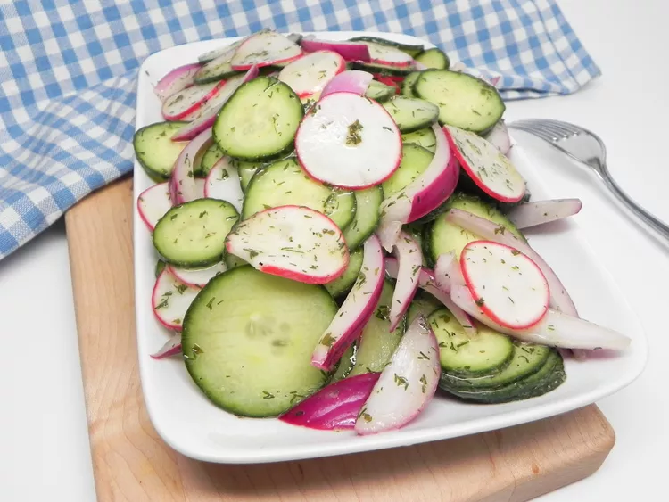

Simple Mediterranean Salad

Light, refreshing mediterranean style cucumber salad.
cold ingredients, no cooking, 10 min prep time.
- 1 (1 pound) English Cucumber, thinly sliced with a mandoline
- 4 radishes, thinly sliced with a mandoline
- 1 small red onion, sliced into petals
- 1 tablespoon freeze-dried dill
- 1 teaspoon parsley flakes
- 3 tablespoons extra-virgin olive oil
- 2 tablespoons white wine vinegar
- 2 teaspoons Dijon mustard
- salt and ground black pepper to taste
- Combine cucumber slices, radish slices, red onion, dill, and parsley in a large bowl.
- Whisk olive oil, vinegar, and mustard together until smooth. Season with salt and pepper.
- Pour dressing over the cucumber salad. Stir until evenly coated. Serve immediately.